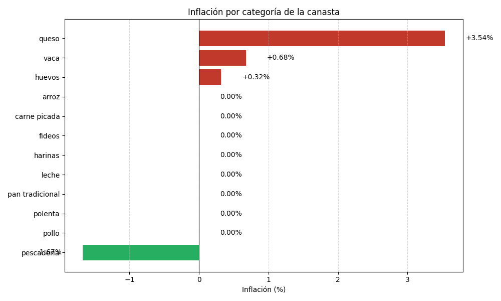
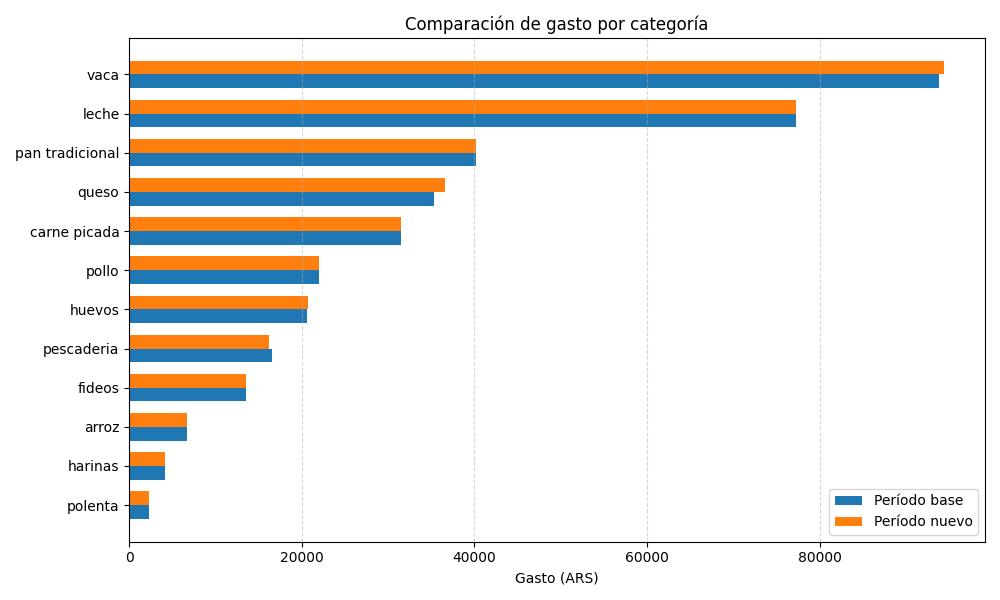

El costo de la Canasta Básica Inicial pasó de $363.966 a $365.645 (+0.46%), con una diferencia de $1.679.
El costo pasó de $363,966.38 a $365,645.18 (ARS), con una diferencia de $1,678.80.


| Categoría | Gasto base | Gasto nuevo | Inflación |
|---|---|---|---|
| queso | $35,317.96 | $36,569.93 | +3.54% |
| vaca | $93,806.82 | $94,442.12 | +0.68% |
| huevos | $20,613.60 | $20,680.20 | +0.32% |
| arroz | $6,688.00 | $6,688.00 | +0.00% |
| carne picada | $31,497.00 | $31,497.00 | +0.00% |
| fideos | $13,547.00 | $13,547.00 | +0.00% |
| harinas | $4,193.40 | $4,193.40 | +0.00% |
| leche | $77,280.00 | $77,280.00 | +0.00% |
| pan tradicional | $40,190.84 | $40,190.84 | +0.00% |
| polenta | $2,341.63 | $2,341.63 | +0.00% |
| pollo | $21,995.00 | $21,995.00 | +0.00% |
| pescaderia | $16,495.12 | $16,220.06 | -1.67% |